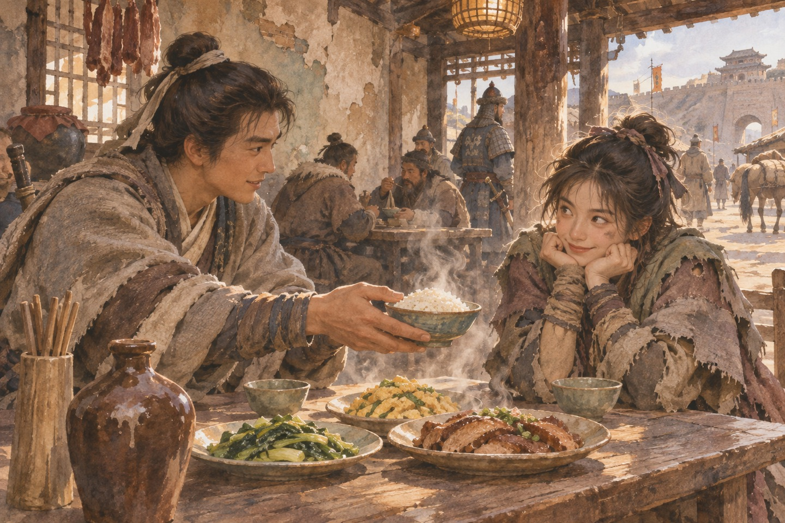

两个名字
郭啸天和杨铁心是从北方逃到江南的两兄弟，一个打猎，一个种地，都娶了妻。一天夜里，一个道士路过，三人喝了一场酒。道士说：你们的孩子，一个叫郭靖，一个叫杨康。两个人问为什么。他说：靖康之耻，还没洗呢。道士叫丘处机，走的时候留下一把短剑，剑上刻着两个字。第二年冬天，官兵来了，带路的人叫段天德。郭啸天死在门口，杨铁心掉进井里。官兵走后，雪把血迹盖住了。屋里还有一个婴儿在哭，是杨铁心的儿子。他被一个金人抱走了。
李萍
郭靖的母亲李萍被掳走，半路逃出来，一个人在雪地里走了几十里，最后昏倒在一片帐篷前。蒙古人收留了她。她在羊圈里生下孩子，取名郭靖。她没有奶，就用羊奶喂。她不会说蒙古话，就先教儿子说汉话。她常对儿子说：你爹是汉人，死在汉人手里。她说：你以后要做一个好人。郭靖问：什么是好人。她说：就是不忘本。她把儿子裹在羊皮里，白天放羊，晚上缝衣服。她一辈子没有改嫁，也没有回过中原。
哲别
郭靖六岁那年，看见一个受伤的武士被追兵围住，就把他藏在草垛里。追兵问他看见没有，他说没有。追兵走后，那个武士出来，说：你叫什么。他说：郭靖。那人说：我叫哲别，以后我教你射箭。他学射箭学了六年，能射落天上的雕。成吉思汗看见他，说：这孩子以后有出息。郭靖说：我娘说，我要做个好人。成吉思汗笑了。哲别教他射箭的时候说：别看箭，看风。他学了很久才懂。后来他一箭射落双雕，大汗把金腰带解下来给了他。
安答
他和成吉思汗的小儿子拖雷结拜，做了安答。两个人一起骑马、摔跤、偷羊。拖雷说：你以后跟我一起打仗。他说：我不打汉人。拖雷说：为什么。他说：我娘说我是汉人。拖雷说：那你也别打我。他说：好。那年冬天，江南七怪找到了他。七个人站在雪地里，为首的是个瞎子，叫柯镇恶。他说：你是郭啸天的儿子。郭靖说：是。他说：那我们教你武功。七怪输了十八年的赌约，可他们还是留下来教他。柯镇恶说：赌是赌，人是人。
七怪
江南七怪教了他十年。他笨，一套拳要学三个月，师父们气得骂人。柯镇恶说：这孩子不是练武的料。可他每天天不亮就起来练，练到天黑。有一天他打了一套拳，韩宝驹说：他没打错。七个人都不说话了。后来全真教的马钰偷偷教他内功，教了两年。他不知道那是谁，只知道每天夜里有个道士在崖上等他。他学会了呼吸，也学会了怎么坐一夜不动。马钰走的时候留了一句话：你资质不好，可你不肯停。这句话郭靖记了一辈子。
小叫化
郭靖南下，在张家口遇见一个小叫化，脏兮兮的，说话很凶。他请小叫化吃饭，点了满满一桌。小叫化说：你钱够吗。他说：够。小叫化吃了半桌，说：你这个人真傻。他说：我娘说，见人饿就要给饭。临走他把自己那匹汗血宝马送给了小叫化。小叫化愣住了，说：你知道这匹马值多少钱吗。他说：不知道。小叫化说：那你还送。他说：我看你喜欢。小叫化把一盘牛肉吃完了，说：我好久没吃饱。他说：那你再点。小叫化看了他一眼，眼睛很亮。

黄蓉
小叫化洗了脸，换了衣服，变成一个姑娘。她说：你看。他说：你是谁。她说：我叫黄蓉。他说：那个小叫化呢。她说：也是我。他说：你为什么骗我。她说：我想看看你是不是真的傻。他说：那你看出什么了。她说：你是真的傻。她说完，转身就走。他追上去，说：你去哪。她说：我饿了。他说：那我请你吃饭。她回过头，笑了。她说：你送我马，我送你一样东西。她从怀里摸出一块点心，掰了一半给他。点心已经压扁了。
杨康
他在赵王府看见一个少年，穿着锦袍，腰上挂着一把短剑。那把剑和他母亲给他的那把是一对。少年说：你是谁。他说：郭靖。少年说：我叫完颜康。他说：你姓杨。少年脸色变了，说：我姓完颜。那个少年是杨铁心的儿子，被完颜洪烈养大，做了金国的小王爷。他母亲包惜弱住在王府后院，屋里摆着丈夫的灵位，一摆十八年。完颜洪烈站在门口，说：康儿，过来。杨康看了他一眼，又看了郭靖一眼，最后走到了完颜洪烈身边。
比武招亲
穆念慈在街上比武招亲，摆了一个擂台。杨康上台，三招把她打倒，抢了她的绣鞋，笑着走了。穆念慈站在台上，脸涨得通红。郭靖看不下去，追上去要鞋。杨康说：你算什么东西。两个人打了起来。穆念慈后来跟了杨康，跟了很多年。她知道他不是好人，可她说：我这一辈子，只喜欢过一个人。她说完，自己先低下头。穆念慈的绣鞋是红色的，鞋底绣着一对鸳鸯。杨康把它揣在怀里，揣了很多年。
出处 · 原著第 7 回 比武招亲
黄药师
黄蓉带他上桃花岛。岛上种满桃花，摆着阵。黄药师坐在亭子里，看了他一眼，说：你想娶我女儿。他说：是。黄药师说：你凭什么。他说：我什么都没有。黄药师说：那你走吧。黄蓉说：爹。黄药师出了三道题：比武功、比音律、比背书。郭靖前两样都输，第三样赢了——他背的是九阴真经的残篇。黄药师愣了半天，说：你这个人，运气太好。三道题答完，黄药师沉默了很久，说：你娶她可以，但要留在我岛上。郭靖说：我要回中原。黄药师说：那你走吧。
洪七公
黄蓉用一只叫化鸡引来了洪七公。老叫化吃了半只，说：这鸡做得不错。她说：那我天天给你做。他说：你想学什么。她说：降龙十八掌。他说：那是丐帮的功夫。她说：你教他。他看了看郭靖，说：这孩子笨。洪七公教了他一个月，教了十五掌。他说：剩下的三掌，以后再说。郭靖跪下磕头，说：师父。洪七公摆手说：别叫，我还没收你。他说完，又啃了一口鸡腿。洪七公说：你学武是为了什么。郭靖说：为了不让人欺负我娘。洪七公说：你娘已经不在了。郭靖说：那我为了不让人欺负别人。
周伯通
他在岛上遇见一个白胡子老头，被关在山洞里十五年。老头说：我叫周伯通，是王重阳的师弟。他说：你为什么被关。老头说：因为我好玩。他说：那你不冤。老头说：我不冤，我就是闷。周伯通教他双手互搏，一手画圆一手画方。他学了三个月才会。周伯通又把九阴真经的口诀教给了他，说：你别告诉别人是我教的。他说：为什么。老头说：因为我自己没练。周伯通说：你这个人真闷。郭靖说：我师父也这么说。周伯通说：那你跟我玩。他说：玩什么。周伯通说：玩什么都行。
欧阳锋
欧阳锋带着侄儿欧阳克来中原，为的是九阴真经。他在归云庄放蛇，把一屋子人困住。郭靖用降龙十八掌打退了他三招，他退了一步，说：这孩子有古怪。他说完，看了郭靖一眼，那一眼很冷。欧阳克看上了黄蓉，处处纠缠。他叔叔说：你要是喜欢，就抢。他说：我抢不过她。他叔叔说：那就用毒。他笑了，说：好。欧阳锋的蛇阵摆开，地上全是蛇。郭靖把黄蓉护在身后，说：你别动。她说：我不动。他说：我数三下，你就跑。
身世
杨铁心没有死。他在江湖上找了妻子十八年，最后在赵王府后院找到了她。包惜弱说：你活着。他说：我活着。她说：我嫁给了他。他说：我知道。她说：你为什么现在才来。他说：我一直在找。两个人抱在一起，被追兵围住。杨铁心一枪刺死几个，回头说：康儿，你过来。杨康站在原地没动。杨铁心说：你是我儿子。杨康说：我姓完颜。包惜弱说：他对我很好。杨铁心说：我知道。她说：可我没有一天不想你。他说：我知道。他说完，把她抱住了。
出处 · 原著第 15—16 回
死
杨铁心把枪尖对准自己的胸口，说：我这一辈子，对不起你娘。他刺下去。包惜弱扑上去，夺过枪，也刺了自己。两个人倒在一起。杨康站在门口，脸是白的。郭靖把他拉走的时候，他一直在发抖。那天夜里下雪。郭靖把两具尸体放在一起，说：他们是夫妻。他说：应该埋在一起。杨康站在旁边，一句话没说。郭靖挖了两个坑，把他们并排埋了。他在坟前站了很久，说：杨叔，我会照顾康弟。他后来没有做到。
铁枪庙
杨康在铁枪庙里被黄蓉揭穿：他杀了欧阳克，嫁祸给别人，还拿走了丐帮的打狗棒。他扑上去要掐死她，一掌打在她胸口——她穿着软猬甲，甲上沾着欧阳锋的蛇毒。他的手被刺破，毒顺着血往上走。他倒在地上，先是笑，然后开始抽搐。穆念慈赶到的时候，他已经说不出话。他抓住她的手，指了指自己的胸口，死在她怀里。
出处 · 原著第 35 回 铁枪庙
论剑
华山之巅，天下五绝论剑。黄药师、洪七公、欧阳锋、段智兴，还有周伯通。打了七天七夜，没有输赢。最后欧阳锋练了假的九阴真经，疯了，一边打一边喊：我是天下第一。其他人都停了手。洪七公说：他疯了。黄药师说：疯了才好。他说：他一辈子想当第一，现在他觉得自己是第一。他说完，转身下山。周伯通说：他疯了。洪七公说：他早就疯了。黄药师说：我们回去吧。三个人转身下山，谁也没有回头看欧阳锋。
两难
成吉思汗要他带兵打金国，他去了。后来又要他打宋，他不肯。成吉思汗说：你是蒙古人。他说：我是汉人。成吉思汗说：你在我这儿长大。他说：我知道。他说：可我不能打自己的地方。他带着母亲南逃。李萍为了不拖累儿子，趁他不注意，用匕首刺了自己。她死前说：你要记住你爹是谁。他说：我记住。李萍说：你走吧。他说：我带你走。她说：你带不动我。她说：你记住，你是郭啸天的儿子。她说完，把匕首转了个方向。
守
很多年后，他站在襄阳的城墙上。城下是蒙古的兵，城上是宋的旗。黄蓉站在他旁边，说：你后悔吗。他说：不后悔。她说：我们守不住。他说：我知道。她说：那为什么守。他说：因为这是我们自己的城。他这一守守了几十年。后来的人说：郭大侠守襄阳。没有人说他是蒙古长大的。黄蓉说：城破了怎么办。他说：那就死在这儿。她说：我陪你。他说：你别。她说：我偏要。
出处 · 原著第 40 回 华山论剑（守襄阳属《神雕侠侣》）